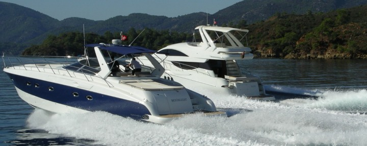
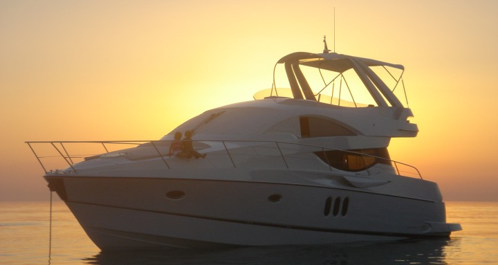
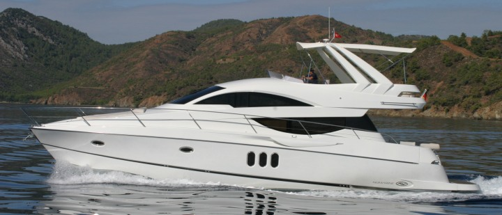
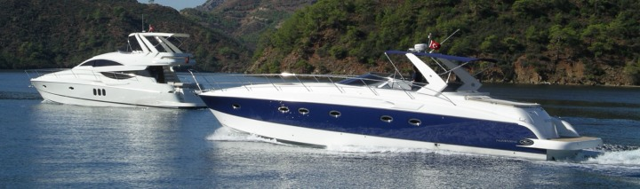
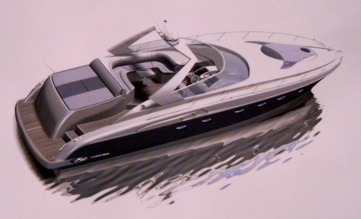
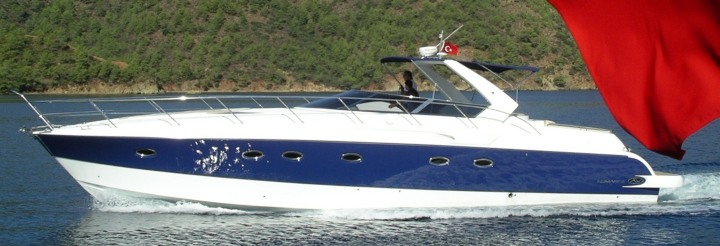
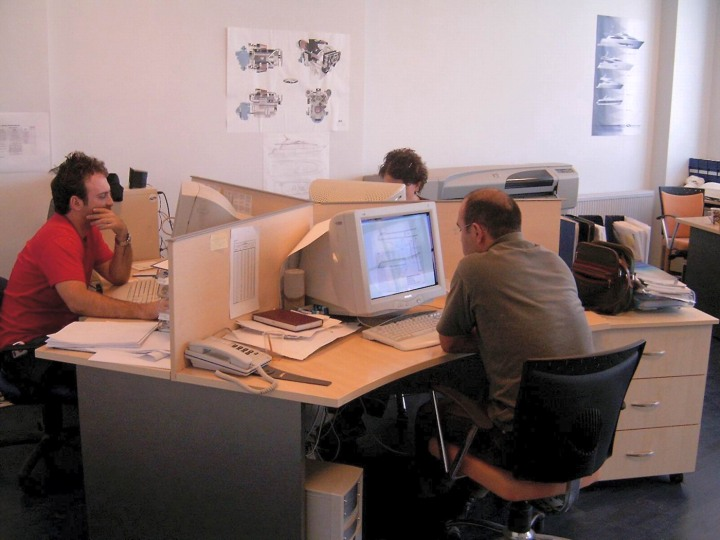
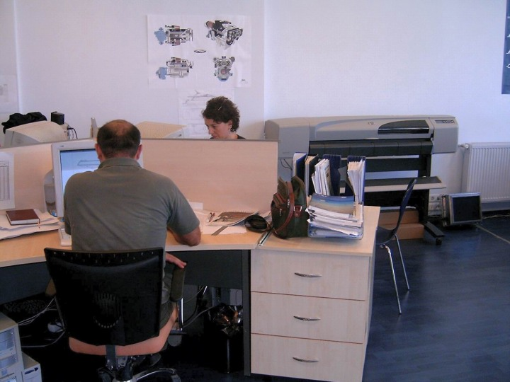
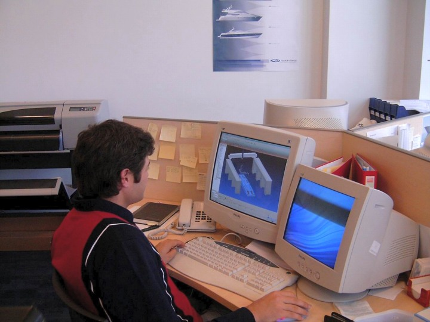
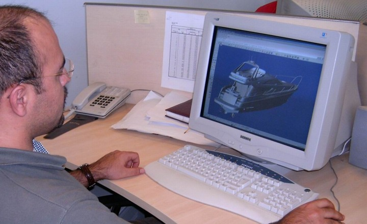

|
Üretimde olan modeller:

Þu an üretimde olan 52' Open Modeli önde arkada ise 52' Flybridge modeli görülüyor.
Numarine tarafýndan önceki yýllarda baþarýyla üretilmiþ olan 52' Flybridge modeline ait bazý fotoðraflar.

52' Flybridge

52' Flybridge

Solda, 52' Flybridge, Saðda 52' Open modelleri bir arada görülüyor.

52' Open (CAD model)

52' Open
Bu bölümde, Numarine A.Þ. Genel Müdürü Muzaffer Erdal Kýlýç ve Endüstriyel Tasarýmcý Can Yalman ile yapýlan röportajlar yer almaktadýr:
 Kendinizden bahseder misiniz? Kendinizden bahseder misiniz?
Erdal Kýlýç: 1962 Ýstanbul doðumluyum. Niþantaþý Anadolu Lisesi'nde okudum. Üniversite'de Gemi Ýnþaat Fakültesi'ne gittim. Sonradan kararsýz kaldým. Ben tiyatrocuydum. Tiyatrocu olmaya karar verdim. Fakat annem bana "senin hayalin buydu, kararýný iyi düþün" dedi. Ýþte böylece ben sektöre girdim.
Çocukluk yýllarýnýzdaki tekne merakýnýzdan biraz söz eder misiniz?
Erdal Kýlýç: Evet, çocukluðumdan beri bu iþlerin içindeydim. Tabii benim bu iþlere yönelmemde babamýn etkisi çok büyük. Babamýn hayali hep bir tekne sahibi olmaktý. Ben, ortaokul yýllarýmý haftanýn beþ günü akþam yemeðinden sonra babamla masa baþýnda tekne tartýþmalarý yaparak geçirdim. Ýþte, þurasý böyle olsun, burasý böyle olsun... Babamla beraber birçok tekne projesi çizerdik... Babam meslek olarak iktisatçýdýr ama iþi hep üretimle oluþmuþtur.
Ýlk teknenizi ne zaman yaptýnýz?
Erdal Kýlýç: Herhalde 10 yaþlarýndaydým. Antalya'da rahmeti amcam vardý. Onun iþyerine yakýn bir marangozun atölyesinde bulunan tekneyi amcamýn oðluyla yaptýk. Teknenin boyu 2,5m civarýndaydý. Gövdesi aðaç tutkalý emdirilmiþ amerikan bezinden yapýlmýþtý. Bu þekilde ilk kompozit malzeme imalat tecrübemi de yaþamýþ oldu. Tekneye bir de motosiklet motoru baðladýk; Bugünkü deniz motosikletlerine benzeyen bir tekneydi.
Neyse, biz o tekneyi yaptýk tamamladýk. Yalnýz, bizim amcaoðlu aþýrý merakýndan beni beklemeye dayanamamýþ, sabahýn köründe kalkmýþ tekneyi denize indirmiþ. Sonra bir iki tur da atmýþ. Dönüþte dalga bastýrmýþ ve kýyýya yanaþýnca tekneyi batýrmýþ! Neyse ben o tekneye hiç binemedim ama teknenin yüzdüðünü gördüm. Ondan sonra teknenin ismini 'Gulugulu' koyduk. :)
Üniversiteyi bitirdikten sonraki meslek hayatýnýz nasýl geliþti?
Erdal Kýlýç: Sonrasýnda 4 arkadaþ bir þirket kurduk. Biraz bir þeyler yapmaya çalýþtýk ama baþaramadýk; iflas ettik. Sonra arkadaþlarýmdan biriyle ortaklýk kurdum. Ardýndan Irak Savaþý baþladý, polyester fiyatlarý üçe, dörde katlandý. Tekrar battýk. Bu batýþýmýzdan da baþka þeyler öðrendik.
Sonra borç harçla bir Ýtalyan ortak buldum. 3 milyon 860 bin Ýtalyan Lireti'ne anlaþtýk. Buradan Ýtalya'ya tekne yaptýk. Evet, giriþimlerimizin kiminden battýk kiminden çýktýk ama tabii bu süre zarfýndan birçok þey öðrendim.
Daha sonra tesadüf bir þekilde Rahmi Koç'la tanýþtým. Benden bir arkadaþým için referans istediler. Ben prensip olarak arkadaþlarýmýn hakkýnda hiç konuþmam. Bu yüzden arkadaþ hakkýnda "piyasada bilinen birisi" dedim. Sonra bana "baþka tavsiye edileceðin bir arkadaþ var mý?" diye sordular. Ben de var dedim. Erdal Kýlýç var dedim. Sonra benimle görüþtüler ve anlaþtýlar. Tekne projeleri yaptýk. Eski bir geminin restorasyonu yaptýk. Bu arada ben baþka iþler de yaptým. Baþka tekneler yaptým. Koç Grubu'nda sekiz seneyi aþkýn çalýþtým ve güzel iþler yaptýk. Daha sonra Türkiye'nin ikinci en büyük tersanesi olan Rahmi Mustafa Koç Tersanesi projesine baþladýlar (Birincisi, yakýnýnda bulunan Sedef Tersanesi'dir).
Tabii sonra beni Kuþadasý'na gönderdiler. Bir yýl orada çalýþtým. Tekne, yat yaptýk. Sonra beni tekrar Ýstanbul'a çaðýrdýlar. Bu arada Koç'tan çok þey öðrendim. Þirket yönetimi, þirket yapýlanmasýný vs. hep Koç'tan öðrendim.
Ardýndan, Koç'tan ayrýldýktan sonra bir yýl kadar yine denizcilik sektörüyle ilgili çalýþmalar yaptýk... Sonra iþte buraya geldim. Burada çalýþmaya baþladýk.
Numarine ne zaman kuruldu? Kurucularý kimdir?
 Erdal Kýlýç: Numarine 2002 yýlýnda tamamen Ömer Malaz tarafýndan kuruldu. Ömer Malaz'ýn teknecilik ve denizciliðe yakýn ilgisi var. Ýyi bir de yatýrým yaptýlar. Þirket kurulduktan sonra beni çaðýrdý, ilk olarak burada danýþman olarak iþe baþladým. Geçen yýl ise burada genel müdür olarak çalýþmaya baþladým. Erdal Kýlýç: Numarine 2002 yýlýnda tamamen Ömer Malaz tarafýndan kuruldu. Ömer Malaz'ýn teknecilik ve denizciliðe yakýn ilgisi var. Ýyi bir de yatýrým yaptýlar. Þirket kurulduktan sonra beni çaðýrdý, ilk olarak burada danýþman olarak iþe baþladým. Geçen yýl ise burada genel müdür olarak çalýþmaya baþladým.
Þirketinizin cirosu nedir? Fabrika kaç metre kare alan üzerine kurulu? Hangi ülkelere ihracat yapýyorsunuz? Sektör ne durumda?
Erdal Kýlýç: Þirketimizin geçen yýlki cirosu 3.5 milyon YTL'idi. Bu sene de 7 milyon YTL'lik bir ciro hedefliyoruz. Tesisimiz 23 bin metre kare alan üzerine kurulu. Fransa'da, Ýtalya'da, Almanya'da, Hýrvatistan'da, Rusya'da, Polonya'da, Venezüella'da distribütörlerimiz var. Ekonomik sorunlarý sebebiyle Almanya'da yat pazarý pek canlý deðil ama diðer Avrupa ülkelerinde, özellikle de Kuzey ülkelerinde talep sürekli artýyor.
Kaç çeþit tekne yapýyorsunuz? Bir tekne ne kadar sürede yapýlýyor?
Erdal Kýlýç: Þu anda sadece 3 çeþit tekne yapýyoruz. Ama 4 çeþit teknemiz var. Kaç tane tekne yaptýnýz derseniz. 10 numara þu anda içeride, üretim hattýnda. 16 numaraya kadar tekneler de imalat halinde.
Tekne yapým süresi biraz izafi bir durum; Yaklaþýk olarak 96 gün. Önümüzdeki yýl amacýmýz iki haftada bir tekne çýkarmak.
Ürettiðiniz teknelerin satýþ fiyatý ne kadar?
Erdal Kýlýç: 52" boyunda olanlarý 600-650 bin Euro fiyatlara satýyoruz. Yeni geliþtirdiðimiz ve 2006'da üretimi tamamlanacak olan 102' RPH modeli için ise satýþ fiyatýmýz henüz belli deðil. Ama bir fikir vermesi için söylüyorum, bunun benzeri yatlarýn Avrupa'da satýþ fiyatý 4-5 Milyon Dolar civarýnda.
Kaç kiþilik bir ekiple çalýþýyorsunuz? Tasarýmcýlarýn sayýsý nedir? Tasarýmcýlarýn bir bölümü yabancý olduðundan bir uyum problemi çýkýyor mu?
Erdal Kýlýç: Toplam 173 kiþi çalýþýyor. Bunlardan 44'ü yönetim katýnda görev yapýyor. 44 yönetim kadrosundan 12 tanesi mühendis.
Tasarým konusu ise, sizin bu kelimeyle tam olarak ne ifade etmek istediðinize baðlý; Mesela çatal yapmak tasarým iþi midir? Ben tartýþýrým. Çatal nedir? Üç tane diþi olan sapý olan bir þeydir. Bence tasarým bitmiþtir. Bundan sonra stil çalýþmasý yapýlýr.
Bu açýdan bakarsak biz çok az tasarým yapýyoruz. Ama üretimle ilgili plan, proje çok yapýyoruz.
Tasarým konusunda burada nasýl bir çalýþma yürütülüyor?
Erdal Kýlýç: Ýtalya'daki iki tasarýmcýyla çalýþýyoruz;. Biz burada fikirlerimizi söylüyoruz. Tommaso Spadolini genel bir konsept yapýyor. Teknenin hidrodinamik açýdan tasarýmý (stabilite, sürtünme...), kullanýlacak motor ve güç hesabý ise Ýtalyan gemi inþa mühendisi Umberto Tagliavini tarafýndan yapýlýyor. Tagliavini, yaptýðý tasarýmý iki boyutlu kesitler olarak bize veriyor.
Teknenin 3D yüzey ve katý modellemesi ve detaylý endüstriyel ve estetik tasarýmý konusunda ise Can Yalman ile çalýþýyoruz. Yalman'ýn çalýþmalarýndan sonra teknenin görünüþü neredeyse tamamen deðiþiyor.
Bir de bizim burada yapmamýz gereken tasarýmlar var. Makine dairesinin yerleþtirilmesi, borular, boru geçiþleri gibi, egzoz, kapý kilitleri gibi genel konseptin dýþýnda bir tek tekne tasarýmlarýyla ilgili bütün iþleri burada yapýyoruz.
Tamamýyla yerli tasarýmcýlarla çalýþamaz mýydýnýz?
Erdal Kýlýç: Bir kere bu iþ büyük oranda yýllarca denizcilikle içi içe edinilmiþ bir tecrübeye dayanýyor. Türkiye'de ise tekne ve yat tasarým ve imalatý konusunda tecrübeli çok az kiþi var. Olanlardan da zaten tasarým hizmeti alamýyorsunuz, öyle bir mekanizma henüz kurulu deðil. Tommaso Spadolini ve Umberto Tagliavini ise kendi dallarýnda çok uzun süreli ve geniþ kapsamlý bir tecrübeye sahipler, tasarým hizmeti de veriyorlar...
Siz hangi 3D modellemede hangi programlarý kullanýyorsunuz?
Erdal Kýlýç: 3D modelleri Can Yalman Alias ile hazýrlayýp bize veriyor. Burada genellikle katý yerine yüzey modelleme ile çalýþýyoruz. Biz burada ufak tefek çalýþmalar yaparken Rhino'yu kullanýyoruz. Burada bir çok tasarýmý AutoCAD ile çiziyoruz tabii. Ýki boyutlu olarak kullanýyoruz. Ama, imalat (CAM) aþamasýna geçerken ise orijinal data hangi formattan gelirse gelsin bizim kullandýðýmýz programlar PowerMILL ve PowerSHAPE'dir.
Ben ise bilgisayarýmda VektorWorks programýný kullanýyorum.




CNC iþleme simülasyonu. Firmada CAM uygulamalarý için CNC tezgah üreticisinin önerdiði Delcam / PowerMILL ve PowerSHAPE yazýlýmlarý kullanýlýyor.

Firmada Rhino yaygýn bir þekilde kullanýlýyor
|